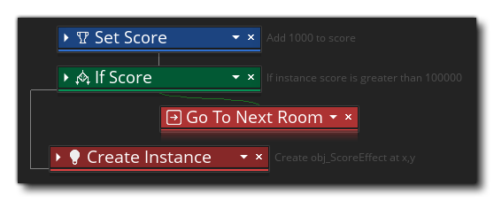

拖拽（Drag and Drop，DnD™） 是一种可视化脚本工具，可用于无需实际键入代码而创建游戏。 这并不是说你使用 DnD™ 时不是编程代码，只是 你的代码是使用可视动作 “块” 而不是以文本方式创建和呈现的。动作是简单的表达式或语句，可以 “链接” 在一起，让物体的实例在放置在房间中时执行某些操作，：例如，可以在创建事件（Create Event）中添加一个动作，让实例在一个随机方向上进行移动，又可以在碰撞事件（Collision Event）中添加另一个动作，来与它相碰撞的物体进行反弹（有关可用的不同事件以及它们如何协同工作的更多信息，请参阅 物体事件（Object Events） 一节）。 上图显示了要编辑的工作空间上打开的典型 物体。它有一个 “事件” 窗口和一个链接到它的 “代码” 窗口，在代码窗口中，你可以看到我们构建 DnD™ 的位置。让我们在这个窗口看得更仔细些，看看我们有什么选择：
上图显示了要编辑的工作空间上打开的典型 物体。它有一个 “事件” 窗口和一个链接到它的 “代码” 窗口，在代码窗口中，你可以看到我们构建 DnD™ 的位置。让我们在这个窗口看得更仔细些，看看我们有什么选择： 你可以在下面找到有关所示每个部分的更多信息：
你可以在下面找到有关所示每个部分的更多信息：
向物体添加事件时，会在代码窗口中打开一个新选项卡以显示该事件的内容。 你可以添加多个事件并同时打开多个选项卡，在它们之间切换并根据需要进行编辑。 你也可以随时关闭选项卡以减少混乱（再次选择物体中的事件将重新打开它们），你可以单击
窗口中的选项卡并将其拖动到自己的代码窗口中，在这种情况下关闭物体或代码窗口 不会 关闭新窗口。可以向左或向右拖动选项卡以进行重新排序。``
当你为动作添加动作块时，它们将以 “速记” 形式显示为正在进行的简单英语概述。 概述顺序是为该事件运行每个动作块的顺序，你可以单击
你可以在此工作区区域中从 “工具箱” 中拖动 “动作” 以创建 DnD™ 代码。单击
当你向代码添加动作块时，它们将在视觉上 “链接” 在一起以指示不同动作将发生的顺序，尽管如何创建此链将取决于已使用的初始动作块。例如，如果 块将具有两个链 - 如果检查的条件为 真（true），则执行为真时调用的动作块，然后是接下来的动作块。有关将动作块构建到代码中的更多信息，请参阅下面的部分。
在 “动作块” 工作区中，你可以使用鼠标中键
进行平移，使用鼠标滚轮向上或向下滚动动作列表。如果在移动鼠标滚轮的同时按住
，则视图将向左 / 向右滚动，如果按住
/
并移动鼠标滚轮，则视图将放大和缩小，允许你通过操作查看更多工作区。你可以单击左侧动作列表中的任何动作来聚焦该动作、重置缩放和位置。另请注意，你可以通过将鼠标移动到块的边缘来调整动作块的大小，然后 - 当光标改变时 - 沿你需要的方向拖动。
你还可以右键单击
DnD™ 工作区中的任意位置以显示鼠标右键菜单：
此菜单包含以下选项：
- 剪切 / 复制 / 粘贴：这将允许你剪切、复制或粘贴在工作区中选择的任何动作。 请注意，你可以在动作之外使用
- 禁用：此命令将禁用所选的动作。禁用某个动作后，它仍然可以在工作区中看到，但在编译游戏时它 不会运行。通过这种方式，你可以添加 / 删除用于测试和调试的动作。下图显示了一些禁用了动作的 DnD™ 代码：
你可以看到 “If Score（如果得分）” 和 “Go To Next Room（前往下一个房间）” 动作已被禁用，因此在测试或编译游戏时将跳过它们。
- 切换断点：此命令将为所选动作打开或关闭 断点。断点只是 DnD™ 代码中调试器应该在 调试模式 下运行时停止的一个点。将突出显示分配了断点的动作，如下图所示（“If Health（如果健康值）” 动作已设置为断点）：
- 删除所有断点：使用此命令可以从 DnD™ 代码中删除所有断点。
- 全部折叠：DnD™ 动作可以折叠或展开，折叠动作只显示动作的名称，但不显示任何内部值，从而最大化工作区的可用空间。 例如： 正如你所看到的，这些动作占用的空间要少得多，你仍然可以通过右侧的简短描述看到它们的作用。
- 重置布局：这将重置 DnD™ 工作区，将缩放级别设置为 100％，重点关注当前选定的动作，以及扩展任何（和所有）折叠动作。
- 实时预览：选择此选项后，你将启用或禁用 DnD™ 到 GML（GameMaker 语言）代码预览窗口。在 拖拽按钮转换为代码 页面上会对此进行更详细的说明。
- 转换成 GML：这会将当前事件中的所有动作转换为 GML（GameMaker语言）代码。要非常小心，因为你无法将 GML 转换回创建它的 DnD™ 动作。你 可以 从代码将事件转换回 DnD™ 事件，但任何代码都将简单地包含在 执行代码 动作中。
- 单一窗格 / 2列 / 3列：这些选项可用于将当前的空间分隔为 1、2 或 3 个不同的 “窗格”。每个窗格都是一个单独的工作区，可以将脚本或事件拖到它们上，这样你就可以一次编辑和比较两个或更多 DnD™ 代码块。下图显示了在自己的工作区窗格中显示的一个窗口中的两个脚本：
动作工具箱是存储所有 DnD™ 动作的地方，不同的部分包含相似或相关的动作的集合（库）。每个动作集合都与特定主题或共同目的相关，你只需单击
有关可用动作的完整列表，以及它们采用的参数以及链接方式，请参阅 DnD 参考 部分。


以下几页深入介绍了如何构建动作块代码，以及如何设置动作 作用域 以影响项目中的不同内容以及其他重要细节：